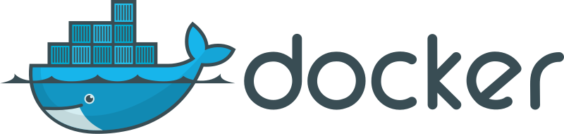
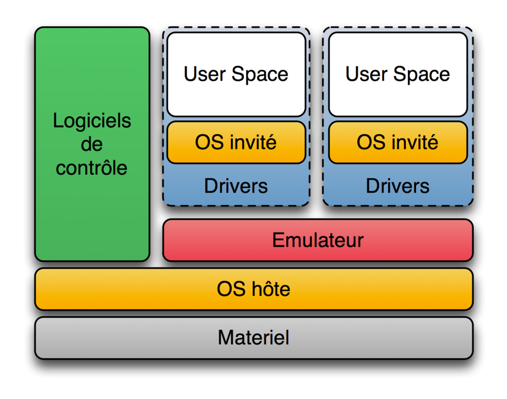
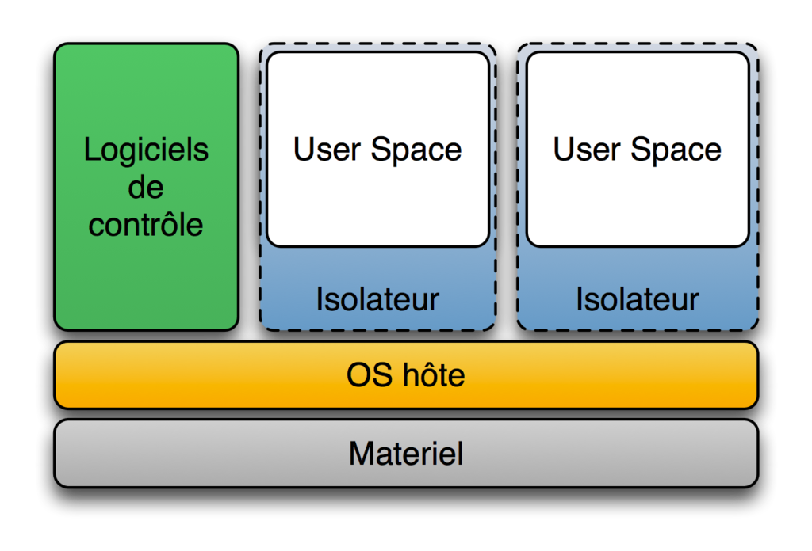
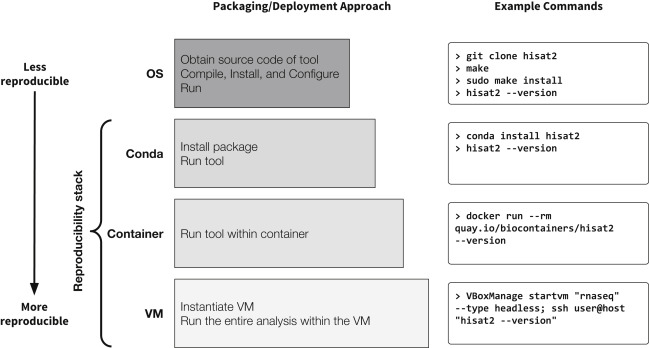

# Docker Pierre Poulain / @pierrepo 11/2018 <div style="margin-top:150px;"> <img src="assets/img/logo_DUO.png" height="100px" style="vertical-align:midle;"> </img> <div style="display: inline-block; width:100px;"></div> <img src="assets/img/logo_UPD_USPC.png" height="120px" style="vertical-align:midle;"> </img> </div> ---  </img> <div class="ref"> [Wikimedia](https://commons.wikimedia.org/wiki/File:Docker_(container_engine)_logo.svg), dotCloud Inc </div> --- <!-- .slide: data-background="assets/img/PublicDomainPictures__Container_storage_cargo_shipping_dock__Pixabay__CC0.jpg" --> --- ## Docker 2013 <www.docker.com> --- ## Comment installer un logiciel *simplement* et *efficacement* ? ```bash $ conda install -y fastqc bowtie2 htseq samtools ``` <!-- .element: class="fragment" style="margin-top:100px;"--> Mais quid des bases de données, des serveurs web, des applications avec beaucoup de dépendances... ? <!-- .element: class="fragment" style="margin-top:100px;"--> --- ## Autres solutions <div class="container"> <div class="col"> Machine virtuelle  </img> <div class="ref" style="margin-top:-70px"> [Wikimedia](https://commons.wikimedia.org/wiki/File:Diagramme_ArchiEmulateur.png?uselang=fr), Primalmotion </div> <p style="font-size:1.8rem;"> VirtualBox, VMware... </p> </div> <div class="col fragment"> Conteneur  </img> <div class="ref" style="margin-top:-70px"> [Wikimedia](https://commons.wikimedia.org/wiki/File:Diagramme_ArchiIsolateur.png?uselang=fr), Primalmotion </div> <p style="font-size:1.8rem;"> LXC, Docker... </p> </div> </div> --- ## Quelques termes <div class="fragment" style="text-align: left;"> **image** = ensemble fonctionnel correspondant à **1** unique application <br /> - figée <br /> - dépôts : DockerHub, BioShadock </div> <div class="fragment" style="text-align: left;margin-top:50px;"> **conteneur** = image "active / vivante" </div> --- ## Pour aller plus loin... <div class="container"> <div class="col"> <span style="font-size:1.2rem">Docker appliqué à la bioinformatique</span> <iframe width="560" height="315" src="https://www.youtube.com/embed/gusLyyNp3VM" frameborder="0" allow="accelerometer; autoplay; encrypted-media; gyroscope; picture-in-picture" allowfullscreen></iframe> <div class="ref" style="margin-top:-10px;"> [Youtube](https://www.youtube.com/watch?v=gusLyyNp3VM), Sandrine Perrin </div> </div> <div class="col"> <span style="font-size:1.2rem">Docker en bioinformatique - commandes</span> <iframe width="560" height="315" src="https://www.youtube.com/embed/xdCEwNo4HNY" frameborder="0" allow="accelerometer; autoplay; encrypted-media; gyroscope; picture-in-picture" allowfullscreen></iframe> <div class="ref" style="margin-top:-10px;"> [Youtube](https://www.youtube.com/watch?v=xdCEwNo4HNY), Sandrine Perrin </div> </div> </div> --- ## Reproductibilité ! <div style="font-size:1.4rem;text-align:left;"> *Practical Computational Reproducibility in the Life Sciences* <br /> Grüning et al, Cell Systems, 2018, [DOI 10.1016/j.cels.2018.03.014](https://doi.org/10.1016/j.cels.2018.03.014) </div>  </img> <div class="ref" style="margin-top:-20px"> Grüning et al, Cell Systems, 2018, [DOI 10.1016/j.cels.2018.03.014](https://doi.org/10.1016/j.cels.2018.03.014) </div> --- <!-- .slide: data-background="#a1f4c5" --> ## Lancement d'une application "dockerisée" Sous Windows. <!-- .element: class="fragment" --> Avec une base de données, un serveur web et plein de code R. <!-- .element: class="fragment" --> Pour faire du peak calling 🤩 <!-- .element: class="fragment" --> --- <!-- .slide: data-background="#a1f4c5" --> ## bPeaks app <div style="font-size:2rem;text-align:left;"> *Empowering the detection of ChIP-seq “basic peaks” (bPeaks) in small eukaryotic genomes with a web user-interactive interface* <br /> T Denecker & G Lelandais, BMC Research Notes, 2018, <br /> [DOI: 10.1186/s13104-018-3802-y](https://doi.org/10.1186/s13104-018-3802-y) </div> <div style="font-size:2rem;text-align:left;margin-top:50px;"> [GitHub](https://github.com/thomasdenecker/bPeaks-application) / [doc](https://thomasdenecker.github.io/bPeaks-application/) </div> --- <!-- .slide: data-background="#a1f4c5" --> En binôme. [Installez](https://github.com/omics-school/docker-install-windows10) Docker. [Installez](https://github.com/thomasdenecker/bPeaks-application) *bPeaks app*. [Utilisez / testez](https://thomasdenecker.github.io/bPeaks-application/) *bPeaks app*. --- <!-- .slide: data-background="#a1f4c5" style="text-align:left;font-size:2rem;"--> ## Installer bPeaks app Téléchargez le fichier [zip](https://github.com/thomasdenecker/bPeaks-application/archive/master.zip) du projet. Déplacer ce fichier zip dans un répertoire qui vous semble pertinent puis décompressez-le. Dans le répertoire `bPeaks-application-master`, double-cliquez sur `INSTALLATION_WINDOWS.bat`. Patientez le temps que les images Docker soient téléchargées. Toujours dans le même répertoire, double-cliquez sur le fichier `bPeaks_application.bat`. Ouvrez votre navigateur à l'adresse <http://localhost:3838/>. Pour accéder à l'application, le login est *admin* et le mot de passe est *admin*. --- <!-- .slide: data-background="#a1f4c5" style="text-align:left;font-size:2rem;"--> ## Utiliser bPeaks app (1) Un jeu de données exemple se trouve dans le répertoire `Data` dans le répertoire du projet. Sélectionnez d'abord *bPeaks Analyzer*. Utilisez les paramètres par défaut : - *IP data* : `SUBIP.txt` - *Control data* : `SUBCO.txt` - *CDS positions* : `cds.txt` - *Genome sequence* : `cerevisiae_SGD_18-06-12.fsa` Laissez les autres paramètres par défaut, puis cliquez sur *1 - Run* Une fois la détection de pics faite, cliquez sur *2 - Download* pour télécharger le fichier de résultats. --- <!-- .slide: data-background="#a1f4c5" style="text-align:left;font-size:2rem;"--> ## Utiliser bPeaks app (2) Cliquez ensuite sur *3 - Exploration*. Chargez les fichiers d'entrée : - *Select Zip folder* : le fichier de résultats que vous venez de télécharger ou `Example.zip` dans le répertoire `Data`. - *GFF file* : `Scerevisiae.gff.gz` Explorez les différentes pics détectés, notamment sur le chromosome II (*chrII*). Le fichier de résultats contient un fichier BED avec les positions des pics. Visualisez ces pics avec IVG. ---